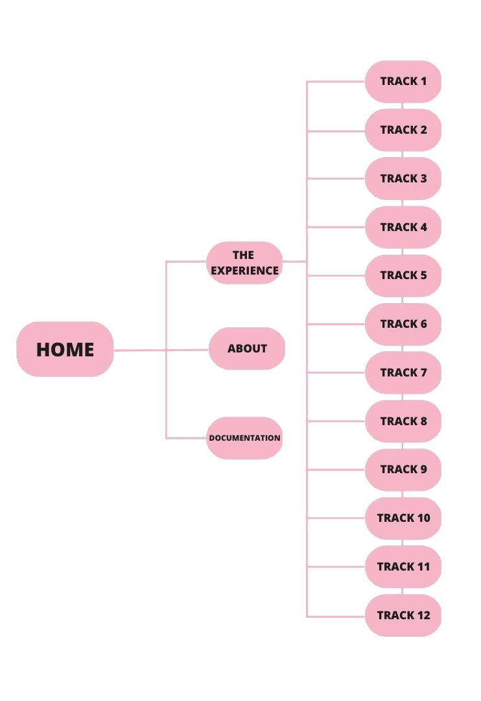

L'idea nasce da un'esperienza negativa che ho avuto cercando di ascoltare l'ultimo album di Kendrick Lamar, seguendo i testi su Genius.com. In quanto il sito non è pensato per accompagnare l'ascolto. L'obiettivo di The Igor Experience è, dunque, quello di accompagnare in maniera fluida l'ascolto del disco, permettendo di seguirne la narrazione. La scelta dell'album è basata sul fatto che Igor ha una narrazione interna fatta di flashforward e flashback, per cui una guida può essere molto importante. La speranza è che altri appassionati si mettano a fare lo stesso con i loro dischi preferiti.
L'obiettivo principale è creare una guida all'ascolto di Igor, scritto e cantato da Tyler The Creator, che si affianchi in maniera fluida all'ascolto dell'album. La guida è composta di un'introzione scritta da me e dalle lyrics incorporate da Genius, così da chiarire l'intricata narrazione.
In virtù dell'estrema specializzazione del sito, credo che sia meglio concentrarsi su un target comportamentale. Per questo ho individuato tre comportamenti che, a prescindere dalla demografia, possono coincidere con l'offerta del sito:
Genius.com: è la maggior fonte per l'analisi dei testi di canzoni, ma non è pensato per affiancare l'ascolto. L'UI intregra la parte del sito dedicata alle news e non rende possibile una fruizione fluida dei dischi.
Last.fm: è un altro sito molto utilizzato che cerca di personalizzare l'ascolto e di scoprire nuova musica che rispetti i nostri gusti. Permette una fruizione dei testi più fluida di Genius, ma pecca per quanto riguarda gli approfondimenti.
Il posizionamento di The Igor Experience è, dunque, al centro tra i due siti web. Cerca di proporre un buon approfondimento e un'esperienza di fruizione fluida.
L'architettura è semplice, credo sia rilevante, sempre nell'ottica di una fruizione fluida, considerare come tutte le pagine dedicate alle tracce sono facilmente accessibili l'un l'altra.
La palette cromatica è basata sulla cover del disco. Una volta pensato il design dell'header, la scelta di utilizzare una dark mode è stata quasi obbligata. Ho cercato di mantenere coerente i cambi di pattern tra i tre colori nei titoli e nei pulsanti. Ho scelto un font sans-serif per la leggibilità e utilizzato lo stesso font della cover del disco per gli elementi di spicco, come il tasto start o i titoli delle canzoni.
Gli elementi della home sono posizionati con il fine di guidare lo sguardo del lettore, in quanto il testo riassume la filosofia del sito. Lo sguardo è guidato in un patterna "a C specchiata", catturato prima dal banner a sinistra, segue il testo a destra per poi scendere e fare l'inverso.
Ci sono diversi siti in cui si possono trovare i testi delle canzoni, ma solo Genius.com ha avuto l'intuizione di integrare i testi con appunti che spiegano gli stessi e approfondimenti.
Genius.com, però, non è ottimale per affiancare l'ascolto. Ad esempio, per navigare da una canzone alla successiva dello stesso album bisogna cercare nella pagina la lista della canzoni, che non è posizionata in modo facilmente raggiungibile.
La pagina web propone, dunque, un esempio di come una guida all'ascolto potrebbe essere pensata, con particolare attenzione alla facilità di navigazione. La speranza è che non solo qualcuno trovi utile la pagina, ma che possa ispirare altri appasionati a fare la stessa cosa.
In primo luogo, il sito è stato pensato in inglese per poter raggiungere una platea di utenti più ampia, non si esclude in futuro di aggiungere la possibilità di cambiare lingua.
Trovo difficile definire un target su base demografica, infatti, se, da un lato, i fan di Tyler The Creator sono generalmente uomini under 30, dall'altro, questo album ha di sicuro un appeal molto ampio anche nel pubblico femminile. In virtù di ciò, preferisco concentrarmi su un approccio comportamentale, pensando, quindi, un sito che incontri la domanda di quegli utenti che vogliono scoprire o far scoprire la narrazione del disco in maniera semplice.
The Igor Experience punta, dunque, a una nicchia già fidelizzata dal cantante, è, quindi, necessaria una campagna pubblicitaria via web mirata. Far conoscere il progetto tra gruppi di appassionati è più utile rispetto a sponsorizzarlo al un pubblico generalista, per questo, influencer in tema musicale, specifici thread di Reddit, pagine Instagram o profili TikTok sono il mezzo principale di comunicazione per avviare un passaparola riguardo al progetto.
The Igor Experience verrà pubblicizzato su Instagram, tramite una specifica pagina e sui principali thread a tema musicale su Reddit.
Il metodo più interessante per misurare l'interesse generato dal sito sono di sicuro gli utenti unici, ma anche le reazioni social su Instagram e Reddit hanno una rilevanza, soprattutto considerando come The Igor Experience punti a ispirare altri progetti simili. Si può verificare un esempio dei post social creati qui.